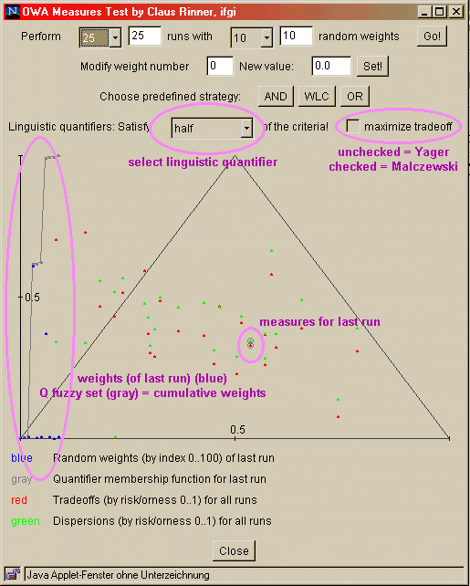
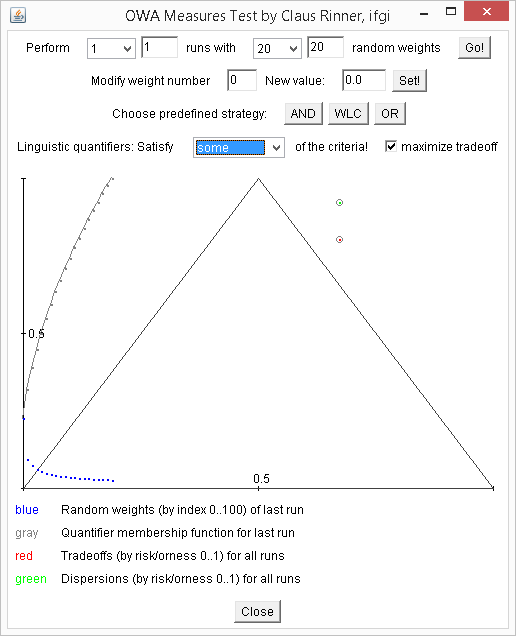

Click the button to run an interactive version of the applet shown in the screenshots below.
Use to explore the parameters and output of the Ordered Weighted Averaging (OWA) technique.

The "historical" screenshot on the left-hand side was taken on March 15, 2003, using the Netscape Web browser...